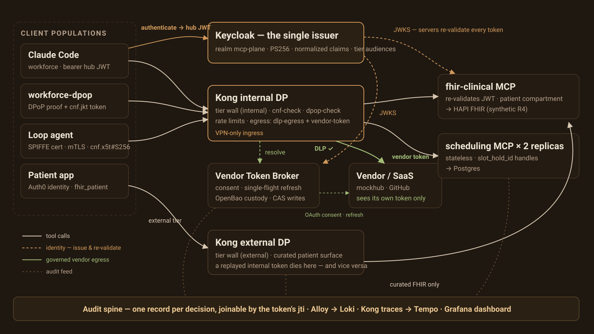

One security vocabulary
Workforce users, customer identities, legacy services, and workloads enter through different front doors. Keycloak turns them into one token format so gateways and servers do not need population-specific policy code.
The system is a runnable home-lab model of an enterprise MCP platform for healthcare. It unifies identity, separates internal and external access, protects clinical reads, gives workloads certificate-backed identity, governs outbound SaaS calls, and joins decisions into one audit trail.

The lab as implemented: client populations, the Keycloak issuer, two Kong tiers, first-party MCP servers, governed vendor egress, and the audit spine.
Workforce users, customer identities, legacy services, and workloads enter through different front doors. Keycloak turns them into one token format so gateways and servers do not need population-specific policy code.
Internal and external gateway tiers have separate audiences and route sets. An external patient or partner token cannot simply be replayed against the internal catalog.
FHIR tools are curated rather than exposing the full backend. Patient-origin tokens are forced into one patient compartment, while broad operations require role visibility and extra scope.
Users connect vendor accounts once. Vendor credentials remain in Vault, outbound arguments pass through DLP, and only a vendor-specific token reaches the SaaS endpoint.
Signs in through the brokered workforce identity, receives an internal token, discovers permitted clinical/scheduling tools, and steps up when a sensitive tool requires more scope.
Uses an Auth0-brokered customer identity and external-tier token. The clinical server rewrites searches and validates patient IDs against the token’s patient linkage.
Receives a rotating SPIFFE certificate, authenticates to Keycloak over mutual TLS without a client secret, and calls scheduling with a certificate-bound token.
Manages reviewed identity and gateway configuration, provisions the lab, inspects audit joins by token ID, and runs phased acceptance and red-team gates.
A person or workload proves identity through its appropriate upstream mechanism.
Keycloak issues the MCP-plane token with identity, tier, server audiences, scopes, and conditional claims.
Kong rejects the wrong tier and applies route-level controls, certificate binding, rate limiting, or egress policy.
The MCP server verifies its audience and applies tool scope, group visibility, and patient rules.
The backend action runs and the final result is recorded with a joinable token identifier.

Five upstream identities normalize to one canonical JWT.
A workforce token enters the internal FHIR route. The server validates it, exposes the caller’s permitted tools, optionally challenges for a broad-read scope, calls HAPI, and audits the actual upstream outcome.
FHIR R4scope step-upA customer token enters through the external gateway. If the token contains a patient linkage, a requested patient ID must match and search parameters are overwritten with that patient. Cross-patient reads fail.
external tierhard filterA caller finds a synthetic slot, creates a Postgres-backed hold, and receives a hold ID. Any scheduling replica can later confirm or release it because continuity lives in the handle and database rather than an MCP session.
two replicasexplicit handleThe internal gateway screens arguments, asks the broker for the current user’s vendor token, and swaps credentials before forwarding. Missing consent starts OAuth; a rotating-token refresh is serialized and persisted with CAS.
DLPVaulttoken isolation
Vault custody, single-flight refresh, DLP verdicts, and vendor-token isolation.
Workforce, workloads, full first-party catalog, mTLS-capable ingress, certificate-bound token enforcement, a DPoP sender-constrained workforce path, and governed egress routes.
Curated patient/partner surface, separate tier audience and control plane, lower rate ceiling, and no route to the SaaS egress catalog.
First-party servers use their own backend posture. On vendor routes, the gateway replaces the hub token with the vendor token. The repository contains dormant passthrough code in the FHIR server, but it is not enabled.
The broker stores and refreshes vendor grants but exposes no token minting, JWKS, or authorization-server endpoint. Keycloak remains the MCP-plane issuer.
FHIR, observability, hub claims, workforce/customer/legacy paths.
Internal/external data planes, audience walls, Git-managed state.
Clinical and scheduling tools, scopes, compartment, replicas.
Lab CA, SPIRE, mTLS, certificate-bound loop agent.
Broker, Vault, DLP, mock vendor, audit joins, red-team probes.